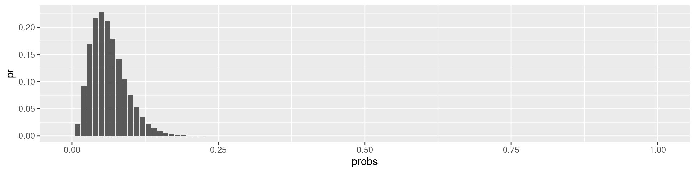
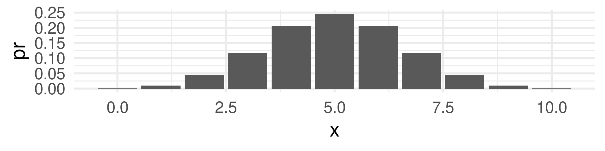
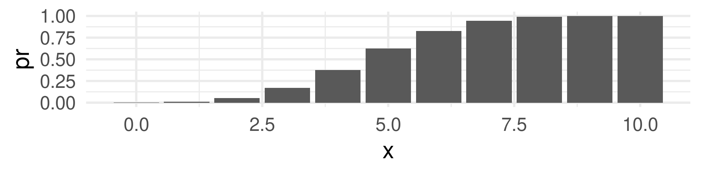

W#11: Probability
Jan Lorenz
Math: Probability
Probability Topics for Data Science
Today concepts and topics
- The concept of probability form the mathematical perspective.
- What are probabilistic events, probability functions and random variables.
- How do random variables relate to data?
- (Binomial distribution)
Events as subsets of a sample space
Sample space, atomic events, events
In the following, we say \(S\) is the sample space which is a set of atomic events.
Example for sample spaces:
- For a coin toss the atomic events are \(H\) (for HEADS) and \(T\) for TAILS, and the sample space is \(S = \{H,T\}\).
- For the selection of one person of a group of \(N\) individuals labeled \(1,\dots,N\), the sample space is \(S = \{1,\dots,N\}\).
- For two successive coin tosses the atomic events are \(HH\), \(HT\), \(TH\), and \(TT\). The sample space is \(\{HH,HT, TH, TT\}\). Important: The atomic events for two coin tosses tare not \(H\) and \(T\).
An event \(A\) is a subset of the sample space \(A \subset S\).
Important: Note the difference of atomic events and events.
Example events for one coin toss
- The set with one atomic event is a subset \(\{H\} \subset \{H,T\}\).
- Also the sample space \(S = \{H,T\} \subset \{H,T\}\) is an event. It is called the sure event.
- Also the empty set \(\{\} = \emptyset \subset \{H,T\}\) is an event. It is called the impossible event.
- In interpretation, the event \(\{H,T\}\) means: The coin comes up HEAD or TAIL.
- The empty set is interpreted as the event that it comes up neither HEADS nor TAILS.
More example events
- 2 coin tosses: The event \({HH, TH}\) means “The first toss comes up HEAD or TAIL and the second is HEADS.”
- The event \({HT, TH, HH}\) means that “We have HEAD once or twice and it does not matter what coins.”
- The event \({TT, HH}\) means “Both coins show the same side.”
Quiz questions for three coin tosses:
- What is the event “The coins show one HEAD”? \(\{HTT, THT, TTH\}\)
- What is the event “The first and the third coin are not HEAD? \(\{THT, TTT\}\)
- How many atomic events exist? \(2^3=8\)
For selecting a random person:
The event \(\{2,5,6\}\) means that the selected person is either 2, 5, or 6.
The set of all events and the probability function
The set of all events
The collection of all events is called a sigma-algebra. (This is a mathematical term which linguistic meaning we do not analyze deeper here.)
Definition: A sigma-algebra \(\mathcal{F}(S)\) is a collection of subsets of a sample space \(S\) when it has the following properties
- The empty set (the impossible event) is part of it \(\emptyset \in \mathcal{F}(S)\)
- When \(A \in \mathcal{F}(S)\) then its complement \(A^c \in \mathcal{F}(S)\). That means: For any event \(A\) also its opposite \(A^c = S \setminus A\) (read \(S\) minus the elements of \(A\)) is an event.
- \(\mathcal{F}(S)\) is closed under the countable set union of its members. That means if \(A_1,A_2,A_3, \dots \in \mathcal{F}(S)\) the \(\bigcup_{i}^\infty A_i = A_1 \cup A_2 \cup A_3 \cup \dots \in \mathcal{F}(S)\). The mathematical technicality is not central here. Import is: The sigma-algebra is the set of all possible events and this is large / more complex then one may naively think.
The power set
- A sigma-algebra \(\mathcal{F}(S)\) is a subset of the set of all subsets (also called power set) of the sample space sometimes denoted \(\mathcal{P}(S)\) or \(2^S\).
- The notation \(2^S\) matches the fact that the power set of a set with \(n\) elements has \(2^n\) elements.

Example powerset of a three element set.
Example for the set of all events
- For 3 coin tosses: How many events exist? \(2^3=8\) atomic events \(\to\) \(2^8=256\) event
- How is it for four coin tosses? \(2^{(2^4)} = 65536\)
- We select two out of five people at random (without replacement). How many atomic events? How many events?
This can be computed by “n choose k” \({n \choose k} =\frac{n!}{(n-k)!k!}\). Here: \({5\choose 2}\).
Thus there are \(2^{10} = 1024\) event.
Example event: “Person 1 is among the selected.” = \(\{12, 21, 13, 31, 14, 41, 15, 51\}\)
These are typical problems of combinatorics, the theory of counting, which is basic for many probability models. We do not go deeper into it here.
Probability function
Definition: For a collection of events (in a sigma-algebra \(\mathcal{F}(S)\)) a function \(\text{Pr}: \mathcal{F}(S) \to \mathbb{R}\) is a probability function when
- The probability of any event is between 0 and 1: \(0\leq \text{Pr}(A) \leq 1\). (So, actually a probability function is a function \(\text{Pr}: \mathcal{F}(S) \to [0,1]\).)
- The probability of the event coinciding with the whole sample space (the sure event) is 1: \(\text{Pr}(S) = 1\).
- For events \(A_1, A_2, \dots, A_n \in \mathcal{F}(S)\) which are pairwise disjoint we can sum up their probabilities:
\[\text{Pr}(A_1 \cup A_2\cup\dots\cup A_n) = \text{Pr}(A_1) + \text{Pr}(A_2) + \dots + \text{Pr}(A_n) \]
This captures the essence of how we think about probabilities mathematically. Most important: We can only easily add probabilities when they do not share atomic events.
Some basic probability rules
- We can compute the probabilities of all events by summing the probabilities of the atomic events in it. So, the probabilities of the atomic events are building blocks for the whole probability function.
- \(\text{Pr}(\emptyset) = 0\)
- For any events \(A,B \subset S\) it holds
- \(\text{Pr}(A \cup B) = \text{Pr}(A) + \text{Pr}(B) - \text{Pr}(A \cap B)\)
- \(\text{Pr}(A \cap B) = \text{Pr}(A) + \text{Pr}(B) - \text{Pr}(A \cup B)\)
- \(\text{Pr}(A^c) = 1 - \text{Pr}(A)\)
Recap from the motivation of logistic regression: When the probability of an event is \(A\) is \(\text{Pr}(A)=p\), then its odds (in favor of the event) are \(\frac{p}{1-p}\). The logistic regression model “raw” predictions are log-odds \(\log\frac{p}{1-p}\).
Random variables to assign number to atomic events
Random variable
- A random variable is a numerical function where values come with probabilities.
- In some statistical model, we consider variables in a data frame as random variables, for example the response variable in a generalized linear model.
Formally, a random variable is
- a function \(X: S \to \mathbb{R}\)
- which assigns a value to each atomic event in the sample space.
Together with a probability function \(\text{Pr}: \mathcal{F}(S)\to [0,1]\) probabilities can be assigned to values of the random variable (see the probability mass function in two slides).
Examples of random variables
- For two coin tosses a random variable can be the number of HEADS. In this case each atomic event is mapped to a number: Either 0, 1, or 2.
- For 62 randomly selected organ donations a random variable can be the number of complications. Each atomic event is mapped to an integer from 0 to 62. (Note, an atomic event are 62 randomly selected organ donations. So, the set of events is \(2^62 \approx 4.61\cdot 10^18\).)
- In the palmer penguins dataset we can consider a variable, e.g. flipper length, to be a random variable. The atomic event would be the random selection of a penguin and the random variable is its flipper length. So we map each penguin to its flipper length.
Probability mass function (pmf)
For
- a random variable \(X\) and
- a probability function \(\text{Pr}\)
the probability mass function \(f_X: \mathbb{R} \to [0,1]\) is defined as
\[f_X(x) = \text{Pr}(X=x),\]
where \(\text{Pr}(X=x)\) is an abbreviation for \(\text{Pr}(\{a\in S\text{ for which } X(a) = x\})\).
Example pmf for 2 coin tosses
Two coin tosses \(S = \{HH, HT, TH, TT\}\)
- We define \(X\) to be the number of heads:
\(X(HH) = 2\), \(X(TH) = 1\), \(X(HT) = 1\), and \(X(TT) = 0\).
- We assume the probability function \(\text{Pr}\) assigns for each atomic event a probability of 0.25.
- Then the probability mass function is \[\begin{align} f_X(0) = & \text{Pr}(X=0) = \text{Pr}(\{TT\}) & = 0.25 \\ f_X(1) = & \text{Pr}(X=1) = \text{Pr}(\{HT,TH\}) & = 0.25 + 0.25 = 0.5 \\ f_X(2) = &\text{Pr}(X=2) = \text{Pr}(\{HH\}) & = 0.25\end{align}\]
- Note that \(\text{Pr}(\{HT,TH\}) = \text{Pr}(\{HT\}) + \text{Pr}(\{HT\})\) by adding the probabilities of the atomic events.
- For all \(x\) which are not 0, 1, or 2 it is obviously \(f_X(x) = 0\).
Binomial distribution and distribution functions in R
Binomial distribution
The number of HEADS in several coin tosses and the number of complications in randomly selected organ donations are examples of random variable which have a binomial distribution.
Definition: The binomial distribution with parameters \(n\) and \(p\) is the number of successes in a sequence of \(n\) independent Bernoulli trials which each delivers a success with probability \(p\) and a failure with probability \((1-p)\).
- The default model for the number of successes drawn from a sample of size \(n\) drawn from a population of size \(N\) with replacement.
- When \(N\) is much larger than \(n\) it is also a good approximation for drawing without replacement.
Binomial probability mass function
\[f(k,n,p) = \Pr(k;n,p) = \Pr(X = k) = \binom{n}{k}p^k(1-p)^{n-k}\]
where \(k\) is the number of successes, \(n\) is the number of Bernoulli trials, and \(p\) the success probability.
Probability to have exactly 3 complications in 62 randomly selected organ donations with complication probability \(p=0.1\) is
The probability to have 3 complications or less can be computed as
This was the p-value we computed with simulation for the hypothesis testing example.
Distribution functions are vectorized!
Compute the p-value:
Plotting the probability mass function
Other plots of binomial mass function
Changing the sample size:

Changing the success probability:
General sysematic of functions for distributions in R
In R we usually have 4 function for each distribution like: dbinom, pbinom, qbinom, and rbinom
- The mass function (or density function, more on this later)

- The distribution function, or cumulative probability function

To continue.